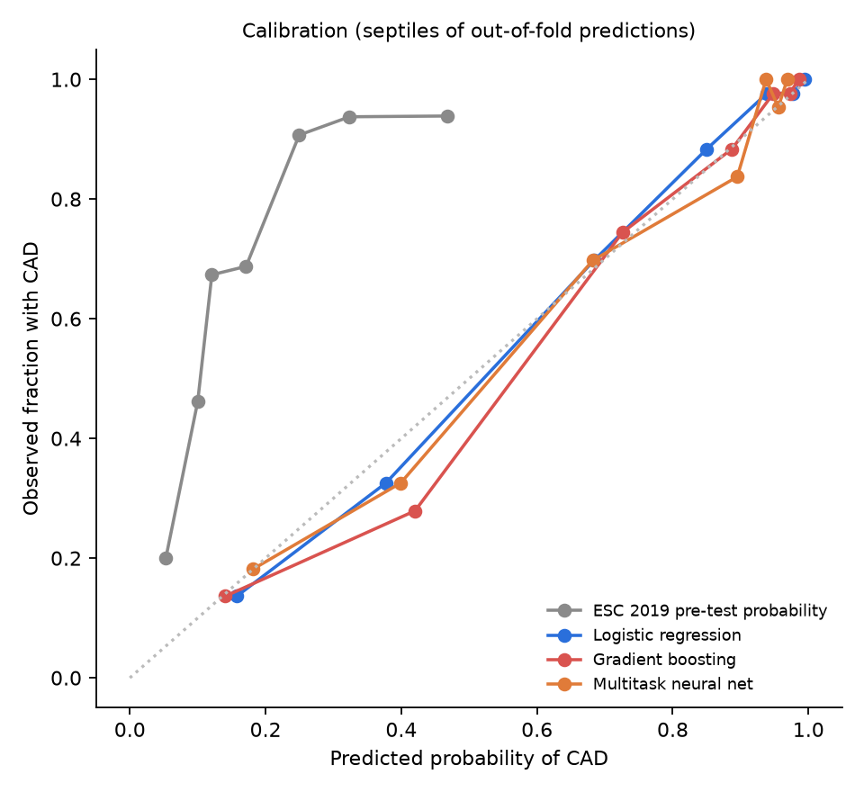

Probability of CAD
—
< 40%40–65%> 65%
vessel stenosis probability
3D view unavailable on this device (WebGL is off). All results are in the side panels.
Every number below is out-of-fold: each patient was scored by a model that never saw them. The protocol was 5 repeats of stratified 5-fold cross-validation on 303 patients, seed 42. 95% confidence intervals come from a patient-level bootstrap. Rerun it with python evaluate.py.
Patients scoring below the threshold would be "low risk, consider deferring angiography". Drag the slider. Lower-left is safer, higher is more useful. No threshold misses zero CAD patients and still avoids many normal angiograms.
Bedside model (7 inputs available everywhere), trained on 4 hospitals and tested on the 5th, for each hospital in turn. 1,223 patients, 4 countries, all labelled by angiography. Dot = bedside model, ring = ESC 2019 table, whisker = 95% CI.
Add k labelled local patients to the other hospitals' training data, refit, and test on the rest of that hospital. Mean AUROC over 20 random draws (10th–90th percentile).
The rule-out threshold is chosen inside each training fold to keep sensitivity ≥95%, then frozen and applied to the test fold. Bold row = the model this dashboard runs.
Logistic regression retrained with only the inputs available in each setting. Bars show AUROC, whiskers the 95% CI.
AUROC of the deployed model (dot) vs. the ESC guideline table (ring), each patient scored out-of-fold.
LCX and RCA are only moderately predictable from clinical data. The original multitask neural network (the first version of this project) scored lower than simple models on every target. We report it rather than hide it.

Invasive coronary angiography is the reference test for coronary artery disease. It needs a cath lab, contrast and arterial access. In this cohort, 29% of referred patients had a normal angiogram. CardioAI asks whether routine clinical data can spot those patients before the procedure, and say how sure it is.